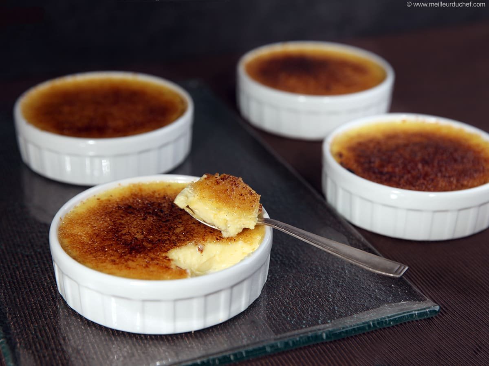

Crème Roulette
You can not get this dessert to go as it is served served in ceramic ramekins
Crème Roulette is a delicate, rolled pastry filled with a smooth and creamy vanilla custard that melts in your mouth with every bite. The pastry itself is light and slightly crisp on the outside, while the inside remains soft and rich, creating a perfect balance of textures. A thin layer of caramelized sugar is added on top, giving it a subtle crunch and a hint of sweetness that complements the creamy filling. This dessert is carefully crafted to provide a refined and elegant experience, making it a perfect choice for customers who enjoy classic flavors with a modern presentation.